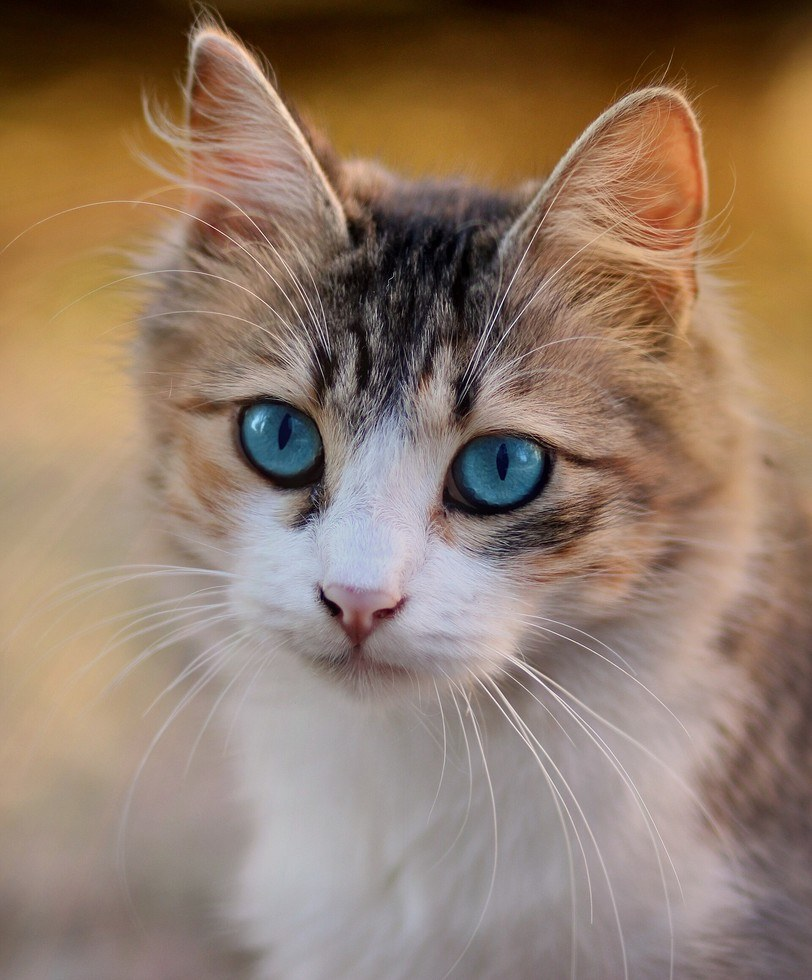

STEP 0The whole answer in 4 sentences
1. An LLM doesn't really read words; it reads vectors (lists of numbers) that words are turned into.
2. So to "show" it an image, cut the image into small squares (patches) and turn each square into a vector.
3. A separate network, the vision encoder, trained on millions of images with captions, makes those vectors meaningful, and a small projector resizes them to the LLM's format.
4. Those vectors (image tokens) go into the prompt next to the word vectors, and the LLM reads them like any other token.
If you remember only this, you have the core idea. Everything below is "why" and "how exactly".
STEP 1 · WHAT YOU ALREADY KNOW, LOOKED AT CAREFULLYAn LLM's real input is vectors, not IDs
You know text becomes tokens and tokens have IDs. The step people skip: the very first thing the model does with an ID is a table lookup.
- "Describe this photo of a cat." → tokenizer →
74785, 419, 6548, 315, 264, 8251, 13(7 tokens; " cat" is 8,251). Real output ofllama-tokenizeon Qwen2.5-VL. - The model has an embedding table: one row per token in the vocabulary. For Qwen2.5-VL 3B it is 151,936 rows × 2,048 numbers (in the file:
token_embd.weight [2048, 151936]). - ID 8,251 means only "take row 8,251". Out comes a vector of 2,048 numbers.
- Every layer after that works on vectors. The IDs are never seen again.
[2048, 151936] means 151,936 rows, each 2,048 numbers long. PyTorch / Hugging Face write the same tensor the other way round: [151936, 2048]. Sanity check: the vocabulary has 151,936 tokens (the tokenizer in the same file lists exactly 151,936), and 2,048 is the model's hidden size, so the rows must be the tokens.STEP 2What a photo is to a computer
A grid of pixels; each pixel is 3 numbers (red, green, blue, 0 to 255). A real pixel from the cat's eye (at 196 × 224 size): R 34, G 79, B 105: dark blue.
A 1920 × 1080 photo = 2,073,600 pixels × 3 = 6,220,800 numbers.
Why not one token per pixel?
- Cost. In attention, each token compares itself with every other token, so cost grows with the square of the length. 2,073,600² ≈ 4.3 trillion pairs per layer. Impossible in practice.
- Meaning. One pixel is just a colour. "Orange" could be cat fur, a sunset, a pizza. Meaning is in groups of pixels: edges, textures, shapes.
So we want fewer, richer pieces. That's exactly what patches are.
STEP 3Patches: an image's "words"
The 2020 Google paper An Image is Worth 16x16 Words introduced the Vision Transformer (ViT). The trick is almost embarrassingly simple:
- Cut the image into a grid of P × P squares (P = 16 in that paper; 14 in Qwen2.5-VL and Gemma 3).
- Take one square: 14 × 14 pixels × 3 colours = 588 numbers. Lay them out in one row ("flatten").
- Multiply that row by one learned matrix → a vector of 1,280 numbers (Qwen's encoder width). This is the patch embedding. In the file:
v.patch_embd.weight [14, 14, 3, 1280]: patch height, width, colours, output size.
Flatten each filter and stack them side by side and you have exactly a 588 × 1,280 matrix: "flatten, then multiply by a matrix" and "slide 1,280 filters over the image, 14 pixels at a time" are the same arithmetic. Code implements it as a convolution with kernel 14 and stride 14 because that does it for every patch at once, and stores the weights in that 4-D shape (again innermost first: 14 wide, 14 high, 3 colours, 1,280 filters).
Nothing is ever multiplied "in 4-D". Two separate things happen: cutting (just rearranging numbers, no maths) and then one ordinary 2-D matrix multiplication.
Toy image: 4 × 4 pixels, grey only (1 number per pixel), patches of 2 × 2, and 2 filters instead of 1,280.
| 1 | 2 | 3 | 4 |
| 5 | 6 | 7 | 8 |
| 9 | 10 | 11 | 12 |
| 13 | 14 | 15 | 16 |
Step 1, cut and flatten (no maths): each 2 × 2 patch becomes one row of 4 numbers, read left to right, top to bottom. 4 patches give a 4 × 4 matrix X:
| patch | its pixels in a row | |||
|---|---|---|---|---|
| A (top left) | 1 | 2 | 5 | 6 |
| B (top right) | 3 | 4 | 7 | 8 |
| C (bottom left) | 9 | 10 | 13 | 14 |
| D (bottom right) | 11 | 12 | 15 | 16 |
Step 2, the filters. Each filter is a 2 × 2 block of weights, the same shape as a patch, so it is stored as [2, 2, 2 filters] (like Qwen's [14, 14, 3, 1280]). Flatten each filter in the same order and stand it up as a column: a 4 × 2 matrix W.
| filter 1 "brightness" | filter 2 "left minus right" | |
|---|---|---|
| top-left weight | 1 | 1 |
| top-right weight | 1 | −1 |
| bottom-left weight | 1 | 1 |
| bottom-right weight | 1 | −1 |
Step 3, multiply X (4 × 4) · W (4 × 2) = a 4 × 2 result: one row per patch, one number per filter. Patch A with filter 1: 1·1 + 2·1 + 5·1 + 6·1 = 14. With filter 2: 1·1 + 2·(−1) + 5·1 + 6·(−1) = −2.
| patch | filter 1 | filter 2 |
|---|---|---|
| A | 14 | −2 |
| B | 22 | −2 |
| C | 46 | −2 |
| D | 54 | −2 |
Each patch is now a vector of 2 numbers: that is its patch embedding. (Filter 2 says −2 everywhere because in this toy image every patch is 1 darker on its left than on its right.)
Colour changes only the row length: each pixel brings 3 numbers (R, G, B) instead of 1, so a 2 × 2 colour patch is a row of 2 × 2 × 3 = 12 numbers, and each filter has 12 weights. Same multiplication.
Real Qwen, same three steps:
| step | shapes |
|---|---|
| image | 980 × 812 × 3 (height × width × colour) |
| cut into 14 × 14 patches | 70 × 58 patches, each 14 × 14 × 3 |
| flatten each patch to a row → X | 4,060 × 588 |
| filters [14, 14, 3, 1280] flattened → W | 588 × 1,280 |
| X · W | 4,060 × 1,280: one 1,280-number vector per patch |
The only rule: a patch and a filter must be flattened in the same order, so pixel (row, column, colour) meets its own weight. Code that does this as a "convolution with kernel 14, stride 14" computes exactly these numbers, just without building X explicitly.
Compare with text: a word → a row of the embedding table. A patch → its pixels × a matrix. Both end as a vector. That is why the paper says an image is "worth 16 × 16 words".

Qwen first resizes width and height to multiples of 28 so the 2 × 2 merge (step 7) fits exactly.
STEP 4Position: where was this patch?
You know this from text: attention itself has no notion of order, so LLMs add position information (today usually RoPE). Same problem here, but in 2D: shuffle the patches and the bare transformer sees the same set.
- Original ViT: add a learned position vector to each patch (one per grid slot). You can see it in Gemma's encoder file:
v.position_embd.weightwith 4,096 slots = 64 × 64 patches. - Qwen2.5-VL: 2D RoPE: the rotation encodes the row and the column, so the model knows "above" and "left of".
STEP 5The vision encoder: a transformer whose tokens are patches
Good news: you already understand it. It's the same machine as an LLM (layers of attention + MLP), with two differences: the tokens are patch vectors, and it doesn't predict a next token; it just outputs one improved vector per patch.
Why it's needed. After step 3, a patch vector only describes its own 14 × 14 square ("dark blue, a curved edge"). Attention lets every patch look at others and mix in what it finds. After many layers, the vector for that patch carries context: it's part of an eye, of a cat, looking at the camera. (That phrase is a description for understanding; nobody can read such a label out of the numbers.)
| Qwen2.5-VL 3B encoder | value |
|---|---|
| layers × width | 32 × 1,280 |
| local layers (28 of them) | attention only inside an 8 × 8-patch window (112 × 112 px). Saves compute, since cost grows with the square of the patch count. |
| global layers | 7, 15, 23, 31: every patch can see the whole image |
| vision file (encoder + projector) | 669 M parameters, 1.34 GB |
| the LLM file | 3.09 B parameters, zero vision tensors: the "eyes" are a separate file |
In llama.cpp that separate file is the mmproj GGUF ("multimodal projector"). It contains the encoder and the projector, despite the name.
STEP 6CLIP: who taught the encoder what a cat is?
Nobody labels millions of patches by hand. The most influential answer is CLIP (OpenAI, 2021). Take this one slowly; it's the heart of the story.
- Data: 400 million images with the text found next to them on the internet (captions, alt text).
- Two encoders: an image encoder (image → vector) and a text encoder (caption → vector), both producing vectors of the same size.
- The game: take a batch of N pairs. Compute the similarity of every image with every caption: an N × N table. The N matching pairs are on the diagonal. Training pushes diagonal scores up and all the others down.
A tiny batch of 3:
CLIP's real batch: 32,768 pairs, so 32,768² − 32,768 = 1,073,709,056 wrong pairs pushed apart in each step. After enough of this, an image's vector lands near the vectors of text that describes it. That's what makes the image vectors meaningful in a "language-like" way, which is exactly what an LLM later needs.
A real run (CLIP ViT-B/16)
| "…a cat" | "…a bicycle" | "…a lighthouse" | "…a pizza" | |
|---|---|---|---|---|
| cat photo | 0.294 | 0.198 | 0.172 | 0.199 |
| bicycle photo | 0.185 | 0.292 | 0.165 | 0.194 |
| lighthouse photo | 0.182 | 0.181 | 0.269 | 0.189 |
| pizza photo | 0.173 | 0.204 | 0.190 | 0.298 |
SigLIP (Google, 2023) changes only the scoring: each cell of the table is its own yes/no question (sigmoid), instead of a softmax across the whole row. Same idea, cheaper to scale. Gemma 3 uses a 400M SigLIP encoder. Qwen2.5-VL trained its own encoder from scratch; one of its stages was CLIP-style training.
STEP 7The projector: the adapter between two networks
The encoder speaks "1,280 numbers per patch"; Qwen's LLM expects 2,048, and even matching sizes wouldn't mean matching meanings: number #7 in one space has nothing to do with number #7 in the other. So a small network sits between them, like a plug adapter.
- LLaVA (2023): a single matrix.
H = W · Z: Z = encoder output, W = learned matrix, H = vectors the size of word vectors. First trained with encoder and LLM frozen, on 595,000 image-caption pairs; the paper calls this "training a compatible visual tokenizer for the frozen LLM". - LLaVA-1.5: a 2-layer MLP instead of one matrix. Still the common design.
- Qwen2.5-VL (the "2 × 2 merge", explained in the box below): first glue each 2 × 2 block of neighbouring patch vectors together (4 × 1,280 = 5,120 numbers), then a 2-layer MLP to 2,048. File tensors:
mm.0 [5120 → 5120],mm.2 [5120 → 2048]. Effect: 4× fewer tokens. Our cat: 4,060 patches → 1,015 image tokens, each covering 28 × 28 pixels. - Gemma 3: 896 × 896 image → 64 × 64 = 4,096 patches → average each 4 × 4 block → 16 × 16 = 256 tokens, always → one matrix from 1,152 (SigLIP width) to 2,560 (Gemma 3 4B's width).
- After the encoder, every 14 × 14 patch has its own vector of 1,280 numbers. The cat has a grid of 58 × 70 = 4,060 of them.
- Group the grid into squares of 2 × 2 neighbouring patches (top-left, top-right, bottom-left, bottom-right). Together they cover 28 × 28 pixels. 58 × 70 patches → 29 × 35 = 1,015 groups.
- In each group, lay the 4 vectors end to end: 4 × 1,280 = 5,120 numbers. Nothing is averaged or thrown away yet.
- Pass those 5,120 numbers through the small 2-layer network (
mm.0: 5,120 → 5,120, thenmm.2: 5,120 → 2,048). Out comes one vector of 2,048: one image token.
DEEP DIVE · THE ACTUAL ARITHMETICFrom pixels to image tokens, with only 2-D matrix multiplication
The natural follow-up questions: what the higher-dimensional shapes mean, what a convolution is, who does the reshaping, how the feed-forward layer treats tokens, and where batches fit. Every result here was checked by running it in PyTorch or NumPy.
A. Higher-dimensional shapes are bookkeeping
You can't multiply the image and the weights directly. In NumPy, img @ W with the image as 980 × 812 × 3 and the weights as 14 × 14 × 3 × 1280 fails with ValueError: operands could not be broadcast together. On arrays with more than 2 dimensions, @ multiplies only the last two dimensions of each (a batched multiply, see G), and these don't line up. The image has to be cut into patch rows first.
B. The toy patch multiplication
See the box in step 3: a 4 × 4 grey image is cut into four 2 × 2 patches, which become a 4 × 4 matrix X (one row per patch). Two filters are flattened into columns, giving W (4 × 2). X · W gives 14, 22, 46, 54 for "brightness" and −2 everywhere for "left minus right". In NumPy, the cutting step for the real cat looks like this:
X = img.reshape(70, 14, 58, 14, 3) # split height into 70×14, width into 58×14
.transpose(0, 2, 1, 3, 4) # bring the "which patch" axes to the front
.reshape(4060, 588) # one row per patch: 14×14×3 = 588 numbers
out = X @ W.reshape(588, 1280) # (4060 × 588) · (588 × 1280) = 4060 × 1280
Checked: one patch's sum computed manually matches its row in out.
C. What a convolution is (and what "2D" and "3D" mean)
A convolution is a small block of weights (a filter, or kernel) that slides over the data. At each position it multiplies the numbers under it by its weights and adds everything up into one output number. The stride is how far it jumps between positions.
| operation | slides along | covers in one go | weights (PyTorch shape) |
|---|---|---|---|
| Conv2d on a colour photo | height, width | all 3 colours | (1280, 3, 14, 14) |
| Conv3d on a colour video | time, height, width | all 3 colours | (1280, 3, 2, 14, 14) |
Toy Conv3d, checked in PyTorch. A "video" of 2 grey frames, each 4 × 4. The filter block is 2 frames × 2 × 2 = 8 weights.
| frame 1 | frame 2 |
|---|---|
| 1 2 3 4 5 6 7 8 9 10 11 12 13 14 15 16 | 17 18 19 20 21 22 23 24 25 26 27 28 29 30 31 32 |
- Filter A "brightness" (all +1). Top-left block: 1 + 2 + 5 + 6 + 17 + 18 + 21 + 22 = 92.
- Filter B "change over time" (+1 on frame 1, −1 on frame 2): 14 − 78 = −64.
| stride 2 (no overlap) | filter A | filter B |
|---|---|---|
| 92 108 156 172 | −64 −64 −64 −64 |
With stride 1 the block moves one pixel at a time, so neighbouring positions overlap and you get 3 × 3 outputs (92, 100, 108 / 124, 132, 140 / 156, 164, 172). That's convolution in the usual image-processing sense. Qwen uses stride = block size, so each position is exactly one patch, and the convolution equals "cut, flatten, multiply by a matrix". Checked: same numbers.
Colour toy (Conv2d). Red = the 1 to 16 grid, green = all 10, blue = all 0. One filter "red minus green" (+1 on red, −1 on green, 0 on blue, so 12 weights for a 2 × 2 patch). Top-left: 14 − 40 = −26; all four patches: −26, −18, 6, 14. As a matrix multiply it's (4 × 12) · (12 × 1).
D. Qwen2.5-VL, step by step, for our cat
Read from the Hugging Face transformers source (image_processing_qwen2_vl.py, modeling_qwen2_5_vl.py) and the vision file used in the demo.
- Input. 2,306 × 1,920 × 3 numbers (height × width × colour).
- Resize (image processor) to fit the token budget, both sides a multiple of 28 (patch 14 × merge 2): 980 × 812 × 3.
- Normalise each value: (v / 255 − mean) / std per colour, using CLIP's values (red: mean 0.481, std 0.269). Same shape.
- Two frames. Qwen's unit spans 2 video frames, so a photo is copied: 2 × 980 × 812 × 3.
- Cut and write rows (image processor, no maths). 70 × 58 = 4,060 patches; each holds 3 colours × 2 frames × 14 × 14 = 1,176 numbers, copied into one row in a fixed order. The patches are ordered so that each 2 × 2 group of neighbours is 4 consecutive rows. → X: 4,060 × 1,176.
- Patch embedding (first layer of the encoder). 1,280 filters of 1,176 weights, stored as (1280, 3, 2, 14, 14); flattened, they form W: 1,176 × 1,280. Y = X · W → 4,060 × 1,280. In code this is
nn.Conv3dwith kernel = stride = (2, 14, 14), the same arithmetic. llama.cpp uses two 2-D kernels (v.patch_embd.weightand.weight.1, one per frame) and adds them. For a still image both frames are identical, so "588 numbers in, 1,280 out" is accurate. - Position. No numbers added; each patch keeps its (row, column), and 2D RoPE uses it inside every attention layer.
- 32 layers, each 4,060 × 1,280 in and out. Inside: Q = Y·Wq, K = Y·Wk, V = Y·Wv (each W 1,280 × 1,280); scores Q·Kᵀ (4,060 × 4,060 in layers 7, 15, 23, 31; 64 × 64 per 8 × 8 window in the other 28); softmax; scores · V; feed-forward 1,280 → 3,420 → 1,280; normalisations and adding back the input.
- Merge + projector (
PatchMerger): RMSNorm → glue 4 consecutive rows,view(-1, 5120): 1,015 × 5,120 → · (5,120 × 5,120) → GELU → · (5,120 × 2,048) → 1,015 × 2,048. - Into the LLM. These 1,015 rows overwrite the 1,015
<|image_pad|>rows of the prompt's embeddings.
| step | shape | maths? |
|---|---|---|
| original photo | 2,306 × 1,920 × 3 | no |
| resize | 980 × 812 × 3 | resampling |
| normalise | 980 × 812 × 3 | per number |
| 2 frames | 2 × 980 × 812 × 3 | copy |
| patches → rows | 4,060 × 1,176 | copy |
| × W (1,176 × 1,280) | 4,060 × 1,280 | matrix multiply |
| 32 layers | 4,060 × 1,280 | matrix multiplies |
| glue 4 rows, × 5,120² , × (5,120 × 2,048) | 1,015 × 2,048 | reshape + multiplies |
| into the prompt | 1,015 rows of the LLM input | copy |
E. Who does the reshaping: a library, or people by hand?
- The library can do it all in one call.
F.conv3d(video, w, stride=(2, 14, 14))with video (1, 3, 2, 980, 812) and w (1280, 3, 2, 14, 14) returns (1, 1280, 1, 70, 58): 1,280 numbers for each of the 70 × 58 patches. Checked: identical to the manual "reshape to 4,060 × 1,176, then multiply". For 2-D there arenn.Conv2dandF.unfold(which just cuts out the patches). Plain NumPy has no such function; you write the reshape yourself. - Qwen's code is half and half. Its image processor does the resize, 2-frame copy, cutting and flattening by hand (
reshape/permutelines written by the Qwen team). That lets images of different sizes be packed into one list (see G), puts 2 × 2 neighbours in consecutive rows for the merge, and records the grid size for positions and windows. The model then uses the library'snn.Conv3don each patch-sized block. - Everything else uses library building blocks:
nn.Linear(a 2-D multiply plus a bias), softmax, normalisation. The model's authors write the reshapes between them, likeview(-1, 5120).
F. The feed-forward layer: one network, each token on its own
There is one feed-forward network (one set of weights). All tokens go through it together as one matrix multiply, but each token is processed independently.
| input X (5 × 2) | X · W1 (5 × 3) | · W2 → (5 × 2) | |
|---|---|---|---|
| token 1 | 1 0 | 1 0 1 | 2 1 |
| token 2 | 0 1 | 0 1 1 | 1 2 |
| token 3 | 1 1 | 1 1 2 | 3 3 |
| token 4 | 2 0 | 2 0 2 | 4 2 |
| token 5 | 0 2 | 0 2 2 | 2 4 |
W1 = [[1 0 1], [0 1 1]], ReLU between (no negatives here), W2 = [[1 0], [0 1], [1 1]].
Output row 3 depends only on input row 3: push token 3 through alone and you get [3 3] again. So "5 copies in parallel" is right if the copies share identical weights, and "one after another" gives the same numbers, just slower. The library does one multiply, e.g. (4,060 × 1,280) · (1,280 × 3,420) in Qwen's encoder. Qwen's version adds a gate matrix, still row by row. The original Transformer paper calls this layer position-wise.
G. Batches: many prompts or images at once
A batch adds one dimension: (B prompts, T tokens, d numbers), e.g. (2, 5, 2).
- Feed-forward ignores the batch: reshape (2, 5, 2) → (10, 2), multiply, reshape back. To this layer, 2 prompts of 5 tokens look like 10 tokens.
- Attention keeps prompts separate: a token may only look at its own prompt, so you get 2 separate 5 × 5 score tables, not one 10 × 10. Q (2, 5, d) · Kᵀ (2, d, 5) = (2, 5, 5). This batched matrix multiply is what
@does on 3-D arrays: the last two dimensions are multiplied, once per entry of the first. - Different lengths: either pad short prompts with dummy tokens plus a mask (their scores set to −∞ before softmax, so weight 0), or pack everything into one long list and record the boundaries.
- Qwen's vision encoder packs. Two images of 4,060 and 1,200 patches become one list of 5,260 rows plus boundaries,
cu_seqlens, so attention never mixes patches from different images. The window layers do the same per 8 × 8 window withcu_window_seqlens. (Both are in Qwen's attention code.) - The demo here used a batch of 1. Servers batch many users' prompts; the maths per token is the same.
STEP 8Inside the LLM: the image becomes part of the prompt
Qwen's chat format around the image (real special-token IDs from the model):
<|vision_start|> (151652) · <|image_pad|> × 1,015 · <|vision_end|> (151653) · "Describe this image in 2 sentences."
- The prompt is tokenized with one
<|image_pad|>placeholder per image token. - After the embedding lookup, before layer 1, each placeholder's vector is replaced by one image vector from the projector.
- From then on it's a normal forward pass. When the model writes "blue", attention lets that position look back at all 1,015 image positions, exactly like looking back at earlier words.
Positions: Qwen's MRoPE gives each image token (row, column); text tokens get a plain counter. That's how "eyes above nose" survives into the LLM.
Read, not write: image vectors are not rows of the vocabulary table; the output layer can only choose among the 151,936 vocabulary entries. So this design can read images but not produce them.
Cost on a laptop CPU: encoding the cat into 1,015 tokens took 54.6 s on CPU, before the first word of the answer.
STEP 9Training in stages: why freeze things?
You glue together two networks that were trained separately. If you trained everything at once from the start, the random new projector would send garbage into the LLM and could damage what it already knows. So: first train the glue, then loosen the rest.
| model | what trains when |
|---|---|
| LLaVA | 1) projector only (595K caption pairs) · 2) projector + LLM, encoder frozen (158K conversations about images) |
| Qwen2.5-VL | LLM starts from Qwen2.5 · 1) only the ViT (1.5T tokens) · 2) everything unfrozen (2T) · 3) long inputs: long video, documents, agent tasks (0.6T) · ≈ 4.1T total |
| Gemma 3 | vision encoder frozen throughout; the language model learns to use it |
STEP 10Resolution is a budget (real experiments)
More pixels → more patches → more tokens → more compute and context. So systems cap it and shrink the image first. Whatever is too small after shrinking is gone before the model sees anything.
| Qwen, token limit | image given | tokens | "eye colour?" | eye chart rows |
|---|---|---|---|---|
| 64 | cat 196×224 · chart 252×168 | 56 · 54 | Blue | 2 / 8 |
| 256 | 392×476 · 504×364 | 238 · 234 | Blue | 5 / 8 |
| 1,024 | 812×980 · 1,008×756 | 1,015 · 972 | Blue | 7 / 8 |
| 2,048 | chart 1,456×1,092 | 2,028 | 7 / 8 | |
| Gemma 3 4B | always 896×896 | 256 | 6 / 8 |
Lesson: a big obvious feature (eye colour) survives a tiny budget; fine detail (small letters) needs many tokens. The eye chart uses random letters so the model can't guess words from context. Google saw the same in Gemma 3's report: document-reading score 31.9 → 45.4 → 59.8 as encoder resolution goes 256 → 448 → 896.
Tiling is the workaround: cut a big image into several full-resolution crops (Gemma's Pan & Scan; InternVL's 1 to 40 tiles of 448 × 448 plus a small thumbnail of the whole). More detail, more tokens.
STEP 11What an image costs in an API
Anthropic's docs: "Claude views images in patches instead of pixels. Each patch is a 28×28-pixel block of the image, referred to as a visual token." Tokens = ⌈w/28⌉ × ⌈h/28⌉, with caps (Claude 4.7 and later: 2,576 px long edge, 4,784 tokens; other models: 1,568 px, 1,568 tokens). OpenAI's docs describe 32 × 32 px patches for some models, with a 2,500-patch budget at high detail on several.
Check against the docs' table: 1000×1000 → 1,296; 1920×1080 → 2,691 (4.7+) or 1,560 at 1,456×819 (other).
STEP 12Other ways to wire it
| design | how the image gets in | examples |
|---|---|---|
| In line (this video's main story) | image tokens placed in the sequence next to words | LLaVA, Qwen2.5-VL, Gemma 3 |
| Cross-attention | image stays outside the sequence; extra layers inside the LLM let text attend to image features | Flamingo (DeepMind 2022); Llama 3: after every 4th layer, +100B params for 405B |
| Discrete image tokens | image → codes from a codebook, added to the vocabulary, so the model can also write images | Chameleon (Meta 2024): 512×512 → 1,024 tokens, 8,192 codes, 65,536 vocab |
| Early fusion | text and vision tokens trained together from the start in one backbone | Llama 4 (still a MetaCLIP-based vision encoder) |
Common core: the image becomes vectors that a transformer can attend to.
STEP 13Why it still fails
- Small text: shrunk below a patch → becomes texture. (Eye chart.)
- Counting: true 4 / 9 / 17 / 38 → Qwen 4, 10, 15, 30; Gemma 5, 8, 21, 47. 1 right of 8, worse as counts grow. There's no counting step; the number is predicted like any token. Anthropic's docs say counts are approximate with many small objects.
- Exact positions: approximate (Anthropic's docs say to verify coordinates).
These are small 3B/4B models in 4-bit on a CPU; bigger models do better. The mechanism, and the reason for these failure types, is the same.
STEP 14Common confusions to avoid
"The LLM looks at the image."
No: it receives vectors made from a shrunk copy. The encoder did the "looking"; the LLM reads the result."CLIP is the model that answers."
No. CLIP is a training method (and a model) that produces an image encoder whose outputs line up with text. The answering is done by the LLM."Image tokens are words from the vocabulary."
No: they are vectors that match no vocabulary row (except in designs like Chameleon, which add image codes to the vocabulary)."Patches and image tokens are the same thing."
In Qwen, 4 patches become 1 token; in Gemma, 4,096 patches become 256 tokens. In the original ViT, yes, 1 patch = 1 token."The projector is big."
No, it's tiny next to the encoder and LLM (Qwen's is about 37M of the 669M in the vision file). Its job is translation, not understanding."More resolution is always better."
Better detail, but more tokens: slower, pricier, and uses context. That's the trade-off the budget chapter shows.STEP 15Check yourself
1. Why can image vectors be inserted into a text model at all?
Because after the embedding lookup an LLM only works with vectors; any vector of the right size, in the space it understands, can occupy a position.2. How many numbers in one Qwen patch, and what comes out?
14 × 14 × 3 = 588 in; a 1,280-number vector out (via v.patch_embd).3. Why do patches need positions?
Attention treats input as a set; without positions a shuffled image is identical to the original.4. In CLIP training, what's pulled together and what's pushed apart?
Each image with its own caption is pulled together; with every other caption in the batch it's pushed apart.5. What does the projector do in Qwen, and why the 2 × 2 merge?
Joins 4 neighbouring patch vectors (5,120 numbers) and maps them to 2,048 for the LLM; cuts the token count by 4.6. Our cat: patches and tokens?
812 × 980 → 58 × 70 = 4,060 patches → 1,015 image tokens.7. Why did 56 tokens answer "blue" but fail the eye chart?
Eye colour is a big feature that survives shrinking; small letters fall below one patch and disappear.8. How does Claude count image tokens?
⌈w/28⌉ × ⌈h/28⌉ after resizing within its cap; 1000×1000 → 1,296.9. Why can't this design draw images?
Its output layer only picks from the text vocabulary; image vectors aren't in it.10. One-line summary?
An LLM never sees pixels; it reads vectors made from patches, trained to sit near the right words.11. Why can't you just do img @ W with the 4-D weights?
The shapes don't line up for a 2-D multiply. First cut the image into a 4,060 × 588 (or 1,176) table of patch rows; then it's (4,060 × 588) · (588 × 1,280).12. What does the "3D" in Conv3d count, and where do the colours go?
The directions the filter slides: time, height, width. Colours are always fully inside the filter and summed over.13. Do 5 tokens go through the feed-forward layer one by one or together?
Together as one 5-row matrix multiply with one shared set of weights, but each row is computed independently: tokens only interact in attention.14. How does a batch of prompts fit in?
Feed-forward treats all tokens of all prompts as rows. Attention keeps a separate score table per prompt (batched multiply), using padding + mask or packing with boundaries (Qwen's vision encoder packs, with cu_seqlens).STEP 16Glossary
| Embedding | the vector a token is turned into; an LLM's real input |
| Patch | a small square of the image (14 × 14 px in Qwen/Gemma) |
| Patch embedding | the vector made from a patch's pixels by one learned matrix |
| ViT | Vision Transformer: a transformer whose tokens are patches |
| Vision encoder | the ViT used to turn an image into patch vectors with context |
| CLIP / SigLIP | training an image encoder and text encoder so matching image-caption pairs get close vectors |
| Zero-shot | doing a task it wasn't trained for, e.g. picking the closest of 5 captions |
| Projector / connector | small network mapping encoder vectors into the LLM's embedding size |
| Image token / soft token | one projected vector placed in the LLM's sequence |
| mmproj | llama.cpp's separate file holding the vision encoder + projector |
| RoPE / 2D RoPE / MRoPE | position encoding by rotation; 2D adds row + column; Qwen's MRoPE adds time for video |
| Window attention | attention limited to nearby patches to save compute |
| Pan & Scan / tiling | cutting a big image into full-resolution crops to keep detail |
| Cross-attention | layers letting text attend to image features kept outside the sequence |
Sources
- Dosovitskiy et al., An Image is Worth 16x16 Words (ViT, 2020): patches, patch embeddings, position embeddings
- Radford et al., Learning Transferable Visual Models From Natural Language Supervision (CLIP, 2021): 400M image-text pairs, contrastive training, batch 32,768, zero-shot
- Zhai et al., Sigmoid Loss for Language Image Pre-Training (SigLIP, 2023)
- Liu et al., Visual Instruction Tuning (LLaVA, 2023) and Improved Baselines with Visual Instruction Tuning (LLaVA-1.5, 2023)
- Qwen Team, Qwen2.5-VL Technical Report (2025): 2D RoPE, window attention, 2 × 2 merger, MRoPE, training stages
- Gemma Team, Gemma 3 Technical Report (2025): 400M SigLIP encoder, 256 soft tokens, Pan & Scan, resolution vs DocVQA
- Chen et al., How Far Are We to GPT-4V? (InternVL 1.5, 2024): 448 × 448 tiles plus a thumbnail
- Alayrac et al., Flamingo (2022) and Llama Team, The Llama 3 Herd of Models (2024): cross-attention designs
- Chameleon Team, Chameleon (2024): discrete image tokens; Meta, The Llama 4 herd (2025): early fusion
- Anthropic, Vision docs and OpenAI, Images and vision (read October 2026): patch-based image token counting and limits
- Experiments: Qwen2.5-VL-3B and Gemma 3 4B (ggml-org GGUF, Q4_K_M) with llama.cpp's llama-mtmd-cli on CPU; CLIP ViT-B/16 with Hugging Face transformers
- Photos: Wikimedia Commons, CC0 (cat by AdinaVoicu; bicycle by Shams948; lighthouse by Jebulon; pizza by Kurt Kaiser)
Watch the full video
18 minutes, animated: the same cat goes from pixels to patches to image tokens, with every number from the real run.